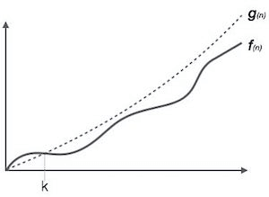
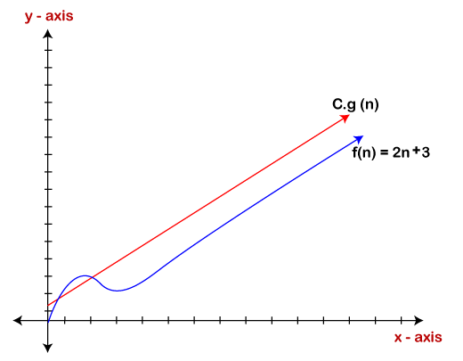
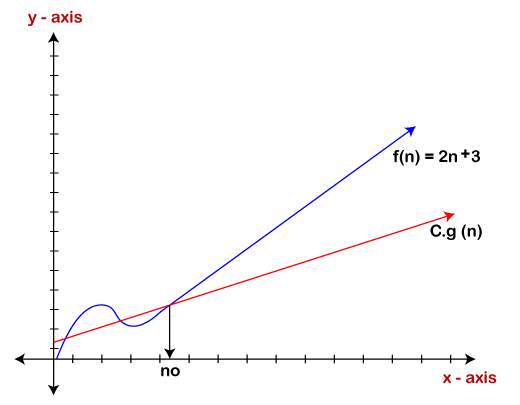
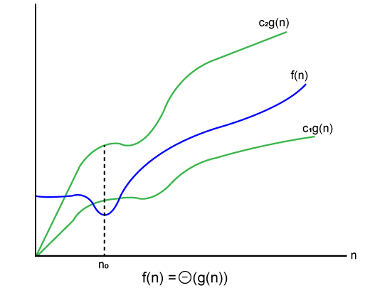

Asymptotic Analysis
As we know that data structure is a way of organizing the data efficiently and that efficiency is
measured either in terms of time or space. So, the ideal data structure is a structure that occupies the
least possible time to perform all its operation and the memory space. Our focus would be on finding the
time complexity rather than space complexity, and by finding the time complexity, we can decide which
data structure is the best for an algorithm.
The main question arises in our mind that on what basis should we compare the time complexity of data
structures?. The time complexity can be compared based on operations performed on them. Let's consider a
simple example.
Suppose we have an array of 100 elements, and we want to insert a new element at the beginning of the
array. This becomes a very tedious task as we first need to shift the elements towards the right, and we
will add new element at the starting of the array.
Suppose we consider the linked list as a data structure to add the element at the beginning. The linked
list contains two parts, i.e., data and address of the next node. We simply add the address of the first
node in the new node, and head pointer will now point to the newly added node. Therefore, we conclude
that adding the data at the beginning of the linked list is faster than the arrays. In this way, we can
compare the data structures and select the best possible data structure for performing the operations.
How to find the Time Complexity or running time for performing the operations?
The measuring of the actual running time is not practical at all. The running time to perform any
operation depends on the size of the input. Let's understand this statement through a simple example.
Suppose we have an array of five elements, and we want to add a new element at the beginning of the
array. To achieve this, we need to shift each element towards right, and suppose each element takes one
unit of time. There are five elements, so five units of time would be taken. Suppose there are 1000
elements in an array, then it takes 1000 units of time to shift. It concludes that time complexity
depends upon the input size.
Therefore, if the input size is n, then f(n) is a function of n that denotes the time complexity.
Example: Running time of one operation is x(n) and for another operation, it is calculated as
f(n2). It refers to running time will increase linearly with an increase in 'n' for the first operation,
and running time will increase exponentially for the second operation. Similarly, the running time of
both operations will be the same if n is significantly small.
Usually, the time required by an algorithm comes under three types:
Worst case: It defines the input for which the algorithm takes a huge time.
Average case: It takes average time for the program execution.
Best case: It defines the input for which the algorithm takes the lowest time
Asymptotic Notations
- 1.Big oh Notation (?)
- 2.Omega Notation (Ω)
- 3.Theta Notation (θ)
Big oh Notation (O)
- Big O notation is an asymptotic notation that measures the performance of an algorithm by simply
providing the order of growth of the function.
- This notation provides an upper bound on a function which ensures that the function never grows
faster than the upper bound. So, it gives the least upper bound on a function so that the
function never grows faster than this upper bound.
It is the formal way to express the upper boundary of an algorithm running time. It measures the
worst case of time complexity or the algorithm's longest amount of time to complete its operation. It is
represented as shown below:

For example:
If
f(n) and
g(n) are the two functions defined for positive integers,
then
f(n) = O(g(n)) as
f(n) is big oh of g(n) or f(n) is on the order of g(n)) if there
exists constants c and no such that:
f(n)≤c.g(n) for all n≥no
This implies that f(n) does not grow faster than g(n), or g(n) is an upper bound on the function f(n).
In this case, we are calculating the growth rate of the function which eventually calculates the worst
time complexity of a function, i.e., how worst an algorithm can perform.
Let's understand through examples
Example 1: f(n)=2n+3 , g(n)=n
Now, we have to find Is f(n)=O(g(n))?
To check f(n)=O(g(n)), it must satisfy the given condition:
f(n)<=c.g(n)< /b>
First, we will replace f(n) by 2n+3 and g(n) by n.>
2n+3 <= c.n
Let's assume c=5, n=1 then
2*1+3<=5*1
5<=5
For n=1, the above condition is true.
If n=2
2*2+3<=5*2
7<=10
For n=2, the above condition is true.
We know that for any value of n, it will satisfy the above
condition, i.e., 2n+3<=c.n. If the value of c is equal to 5, then it
will satisfy the condition 2n+3<=c.n. We can take any value of n
starting from 1, it will always satisfy. Therefore, we can say
that for some constants c and for some constants n0, it will
always satisfy 2n+3<=c.n. As it is satisfying the above
condition, so f(n) is big oh of g(n) or we can say that f(n)
grows linearly. Therefore, it concludes that c.g(n) is the upper
bound of the f(n). It can be represented graphically as:

The idea of using big o notation is to give an upper bound of a
particular function, and eventually it leads to give a
worst-time complexity. It provides an assurance that a
particular function does not behave suddenly as a quadratic or a
cubic fashion, it just behaves in a linear manner in a
worst-case.
Omega Notation (Ω)
- It basically describes the best-case scenario which is
opposite to the big o notation.
- It is the formal way to represent the lower bound of an
algorithm's running time. It measures the best amount of
time an algorithm can possibly take to complete or the
best-case time complexity.
- It determines what is the fastest time that an algorithm
can run.
If we required that an algorithm takes at least certain amount
of time without using an upper bound, we use big- Ω notation
i.e. the Greek letter "omega". It is used to bound the growth of
running time for large input size.
If f(n) and g(n) are the two functions defined for
positive integers,
then f(n) = Ω (g(n)) as f(n) is Omega of g(n) or
f(n) is on the order of g(n)) if there exists constants c and no
such that:
f(n)>=c.g(n) for all n≥no and c>0
Let's consider a simple example.
If f(n) = 2n+3, g(n) = n,
Is f(n)= Ω (g(n))?
It must satisfy the condition:
f(n)>=c.g(n)
To check the above condition, we first replace f(n) by 2n+3 and
g(n) by n.
2n+3>=c*n
Suppose c=1
2n+3>=n (This equation will be true for any value of n
starting from 1).
Therefore, it is proved that g(n) is big omega of 2n+3
function.

As we can see in the above figure that g(n) function is the
lower bound of the f(n) function when the value of c is equal to
1. Therefore, this notation gives the fastest running time. But,
we are not more interested in finding the fastest running time,
we are interested in calculating the worst-case scenarios
because we want to check our algorithm for larger input that
what is the worst time that it will take so that we can take
further decision in the further process.
Theta Notation (θ)
- The theta notation mainly describes the average case
scenarios.
- It represents the realistic time complexity of an
algorithm. Every time, an algorithm does not perform
worst or best, in real-world problems, algorithms
mainly fluctuate between the worst-case and
best-case, and this gives us the average case of the
algorithm.
- Big theta is mainly used when the value of
worst-case and the best-case is same
- It is the formal way to express both the upper bound
and lower bound of an algorithm running time.
Let's understand the big theta notation mathematically:
Let f(n) and g(n) be the functions of n where n is the steps
required to execute the program then:
f(n)= θg(n)
The above condition is satisfied only if when
c1.g(n)<=f(n)<=c2.g(n)< /b>
where the function is bounded by two limits, i.e., upper
and lower limit, and f(n) comes in between. The
condition f(n)= θg(n) will be true if and only if
c1.g(n) is less than or equal to f(n) and c2.g(n) is
greater than or equal to f(n). The graphical
representation of theta notation is given below:

Let's consider the same example where
f(n)=2n+3
g(n)=n
As c1.g(n) should be less than f(n) so c1 has to be 1
whereas c2.g(n) should be greater than f(n) so c2 is
equal to 5. The c1.g(n) is the lower limit of the of the
f(n) while c2.g(n) is the upper limit of the f(n).
c1.g(n)<=f(n)<=c2.g(n)
Replace g(n) by n and f(n) by 2n+3
c1.n <=2n+3<=c2.n
if c1=1, c2=2, n=1
1*1 <=2*1+3 <=2*1
1 <= 5 <=2 // for n=1, it satisfies the
condition c1.g(n)<=f(n)<=c2.g(n)
If n=2
1*2<=2*2+3<=2*2
2<=7<=4 // for n=2, it satisfies the
condition
c1.g(n)<=f(n)<=c2.g(n)
Therefore, we can say that for
any value of n, it satisfies the
condition c1.g(n)
<=f(n)<=c2.g(n). Hence, it is
proved that f(n) is big
theta of g(n). So, this is
the average-case scenario
which provides the realistic
time complexity.